- After studying this chapter, you will be able to:
- Describe the components of the autonomic nervous system
- Differentiate between the structures of the sympathetic and parasympathetic divisions in the autonomic nervous system
- Name the components of a visceral reflex specific to the autonomic division to which it belongs
- Predict the response of a target effector to autonomic input on the basis of the released signaling molecule
- Describe how the central nervous system coordinates and contributes to autonomic functions
- Name the components that generate the sympathetic and parasympathetic responses of the autonomic nervous system
- Explain the differences in output connections within the two divisions of the autonomic nervous system
- Describe the signaling molecules and receptor proteins involved in communication within the two divisions of the autonomic nervous system
The nervous system can be divided into two functional parts: the somatic nervous system and the autonomic nervous system. The major differences between the two systems are evident in the responses that each produces. The somatic nervous system causes contraction of skeletal muscles. The autonomic nervous system controls cardiac and smooth muscle, as well as glandular tissue. The somatic nervous system is associated with voluntary responses (though many can happen without conscious awareness, like breathing), and the autonomic nervous system is associated with involuntary responses, such as those related to homeostasis.
The autonomic nervous system regulates many of the internal organs through a balance of two aspects, or divisions. In addition to the endocrine system, the autonomic nervous system is instrumental in homeostatic mechanisms in the body. The two divisions of the autonomic nervous system are thesympathetic divisionand theparasympathetic division. The sympathetic system is associated with thefight-or-flight response, and parasympathetic activity is referred to by the epithet ofrest and digest. Homeostasis is the balance between the two systems. At each target effector, dual innervation determines activity. For example, the heart receives connections from both the sympathetic and parasympathetic divisions. One causes heart rate to increase, whereas the other causes heart rate to decrease.
Watch this video to learn more about adrenaline and the fight-or-flight response. When someone is said to have a rush of adrenaline, the image of bungee jumpers or skydivers usually comes to mind. But adrenaline, also known as epinephrine, is an important chemical in coordinating the body’s fight-or-flight response. In this video, you look inside the physiology of the fight-or-flight response, as envisioned for a firefighter. His body’s reaction is the result of the sympathetic division of the autonomic nervous system causing system-wide changes as it prepares for extreme responses. What two changes does adrenaline bring about to help the skeletal muscle response?
To respond to a threat—to fight or to run away—the sympathetic system causes divergent effects as many different effector organs are activated together for a common purpose. More oxygen needs to be inhaled and delivered to skeletal muscle. The respiratory, cardiovascular, and musculoskeletal systems are all activated together. Additionally, sweating keeps the excess heat that comes from muscle contraction from causing the body to overheat. The digestive system shuts down so that blood is not absorbing nutrients when it should be delivering oxygen to skeletal muscles. To coordinate all these responses, the connections in the sympathetic system diverge from a limited region of the central nervous system (CNS) to a wide array of ganglia that project to the many effector organs simultaneously. The complex set of structures that compose the output of the sympathetic system make it possible for these disparate effectors to come together in a coordinated, systemic change.
The sympathetic division of the autonomic nervous system influences the various organ systems of the body through connections emerging from the thoracic and upper lumbar spinal cord. It is referred to as thethoracolumbar systemto reflect this anatomical basis. Acentral neuronin the lateral horn of any of these spinal regions projects to ganglia adjacent to the vertebral column through the ventral spinal roots. The majority of ganglia of the sympathetic system belong to a network ofsympathetic chain gangliathat runs alongside the vertebral column. The ganglia appear as a series of clusters of neurons linked by axonal bridges. There are typically 23 ganglia in the chain on either side of the spinal column. Three correspond to the cervical region, 12 are in the thoracic region, four are in the lumbar region, and four correspond to the sacral region. The cervical and sacral levels are not connected to the spinal cord directly through the spinal roots, but through ascending or descending connections through the bridges within the chain.
A diagram that shows the connections of the sympathetic system is somewhat like a circuit diagram that shows the electrical connections between different receptacles and devices. In Figure \(\PageIndex{1}\), the “circuits” of the sympathetic system are intentionally simplified.
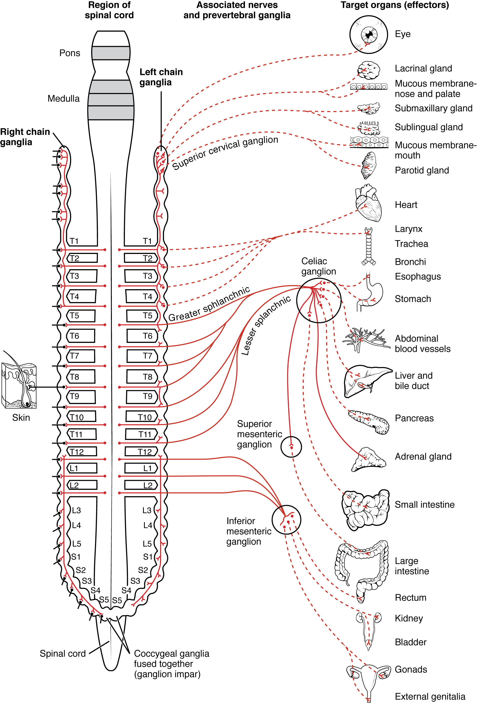
To continue with the analogy of the circuit diagram, there are three different types of “junctions” that operate within the sympathetic system (Figure \(\PageIndex{2}\)). The first type is most direct: the sympathetic nerve projects to the chain ganglion at the same level as thetarget effector(the organ, tissue, or gland to be innervated). An example of this type is spinal nerve T1 that synapses with the T1 chain ganglion to innervate the trachea. The fibers of this branch are calledwhite rami communicantes(singular = ramus communicans); they are myelinated and therefore referred to as white (see Figure \(\PageIndex{2}\)a). The axon from the central neuron (the preganglionic fiber shown as a solid line) synapses with theganglionic neuron(with the postganglionic fiber shown as a dashed line). This neuron then projects to a target effector—in this case, the trachea—viagray rami communicantes, which are unmyelinated axons.
In some cases, the target effectors are located superior or inferior to the spinal segment at which the preganglionic fiber emerges. With respect to the “wiring” involved, the synapse with the ganglionic neuron occurs at chain ganglia superior or inferior to the location of the central neuron. An example of this is spinal nerve T1 that innervates the eye. The spinal nerve tracks up through the chain until it reaches thesuperior cervical ganglion, where it synapses with the postganglionic neuron (see Figure \(\PageIndex{2}\)b). ganglia, although having unique names, are simply part of the sympathetic chain ganglia, also called theparavertebral ganglia.
Not all axons from the central neurons terminate in the chain ganglia. Additional branches from the ventral nerve root continue through the chain and on to one of the collateral ganglia as thegreater splanchnic nerveorlesser splanchnic nerve. For example, the greater splanchnic nerve at the level of T5 synapses with a collateral ganglion outside the chain before making the connection to the postganglionic nerves that innervate the stomach (see Figure \(\PageIndex{2}\)c).
Collateral ganglia, also calledprevertebral ganglia, are situated anterior to the vertebral column and receive inputs from splanchnic nerves as well as central sympathetic neurons. They are associated with controlling organs in the abdominal cavity, and are also considered part of the enteric nervous system. The three collateral ganglia are theceliac ganglion, thesuperior mesenteric ganglion, and theinferior mesenteric ganglion(see Figure \(\PageIndex{1}\)). The word celiac is derived from the Latin word “coelom,” which refers to a body cavity (in this case, the abdominal cavity), and the word mesenteric refers to the digestive system.
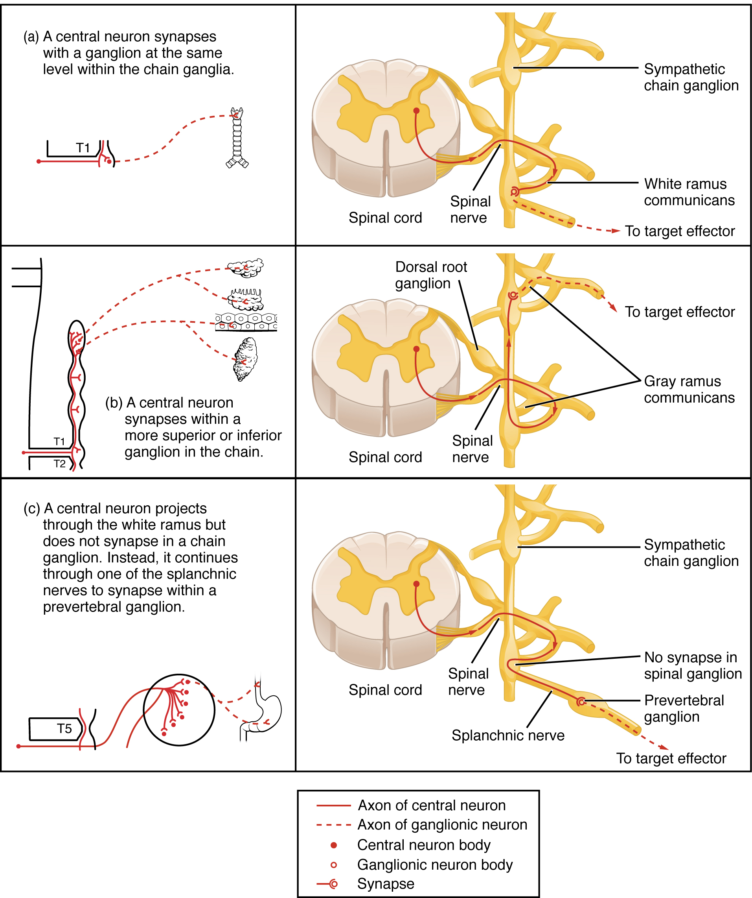
An axon from the central neuron that projects to a sympathetic ganglion is referred to as apreganglionic fiberor neuron, and represents the output from the CNS to the ganglion. Because the sympathetic ganglia are adjacent to the vertebral column, preganglionic sympathetic fibers are relatively short, and they are myelinated. Apostganglionic fiber—the axon from a ganglionic neuron that projects to the target effector—represents the output of a ganglion that directly influences the organ. Compared with the preganglionic fibers, postganglionic sympathetic fibers are long because of the relatively greater distance from the ganglion to the target effector. These fibers are unmyelinated. (Note that the term “postganglionic neuron” may be used to describe the projection from a ganglion to the target. The problem with that usage is that the cell body is in the ganglion, and only the fiber is postganglionic. Typically, the term neuron applies to the entire cell.)
One type of preganglionic sympathetic fiber does not terminate in a ganglion. These are the axons from central sympathetic neurons that project to theadrenal medulla, the interior portion of the adrenal gland. These axons are still referred to as preganglionic fibers, but the target is not a ganglion. The adrenal medulla releases signaling molecules into the bloodstream, rather than using axons to communicate with target structures. The cells in the adrenal medulla that are contacted by the preganglionic fibers are calledchromaffin cells. These cells are neurosecretory cells that develop from the neural crest along with the sympathetic ganglia, reinforcing the idea that the gland is, functionally, a sympathetic ganglion.
The projections of the sympathetic division of the autonomic nervous system diverge widely, resulting in a broad influence of the system throughout the body. As a response to a threat, the sympathetic system would increase heart rate and breathing rate and cause blood flow to the skeletal muscle to increase and blood flow to the digestive system to decrease. Sweat gland secretion should also increase as part of an integrated response. All of those physiological changes are going to be required to occur together to run away from the hunting lioness, or the modern equivalent. This divergence is seen in the branching patterns of preganglionic sympathetic neurons—a single preganglionic sympathetic neuron may have 10–20 targets. An axon that leaves a central neuron of the lateral horn in the thoracolumbar spinal cord will pass through the white ramus communicans and enter the sympathetic chain, where it will branch toward a variety of targets. At the level of the spinal cord at which the preganglionic sympathetic fiber exits the spinal cord, a branch will synapse on a neuron in the adjacent chain ganglion. Some branches will extend up or down to a different level of the chain ganglia. Other branches will pass through the chain ganglia and project through one of the splanchnic nerves to a collateral ganglion. Finally, some branches may project through the splanchnic nerves to the adrenal medulla. All of these branches mean that one preganglionic neuron can influence different regions of the sympathetic system very broadly, by acting on widely distributed organs.
The parasympathetic system can also be referred to as thecraniosacral system(or outflow) because the preganglionic neurons are located in nuclei of the brain stem and the lateral horn of the sacral spinal cord.
The connections, or “circuits,” of the parasympathetic division are similar to the general layout of the sympathetic division with a few specific differences (Figure \(\PageIndex{3}\)). The preganglionic fibers from the cranial region travel in cranial nerves, whereas preganglionic fibers from the sacral region travel in spinal nerves. The targets of these fibers areterminal ganglia, which are located near—or even within—the target effector. These ganglia are often referred to asintramural gangliawhen they are found within the walls of the target organ. The postganglionic fiber projects from the terminal ganglia a short distance to the target effector, or to the specific target tissue within the organ. Comparing the relative lengths of axons in the parasympathetic system, the preganglionic fibers are long and the postganglionic fibers are short because the ganglia are close to—and sometimes within—the target effectors.
The cranial component of the parasympathetic system is based in particular nuclei of the brain stem. In the midbrain, theEdinger–Westphal nucleusis part of the oculomotor complex, and axons from those neurons travel with the fibers in the oculomotor nerve (cranial nerve III) that innervate the extraocular muscles. The preganglionic parasympathetic fibers within cranial nerve III terminate in theciliary ganglion, which is located in the posterior orbit. The postganglionic parasympathetic fibers then project to the smooth muscle of the iris to control pupillary size. In the upper medulla, the salivatory nuclei contain neurons with axons that project through the facial and glossopharyngeal nerves to ganglia that control salivary glands. Tear production is influenced by parasympathetic fibers in the facial nerve, which activate a ganglion, and ultimately the lacrimal (tear) gland. Neurons in thedorsal nucleus of the vagus nerveand thenucleus ambiguusproject through the vagus nerve (cranial nerve X) to the terminal ganglia of the thoracic and abdominal cavities. Parasympathetic preganglionic fibers primarily influence the heart, bronchi, and esophagus in the thoracic cavity and the stomach, liver, pancreas, gall bladder, and small intestine of the abdominal cavity. The postganglionic fibers from the ganglia activated by the vagus nerve are often incorporated into the structure of the organ, such as themesenteric plexusof the digestive tract organs and the intramural ganglia.
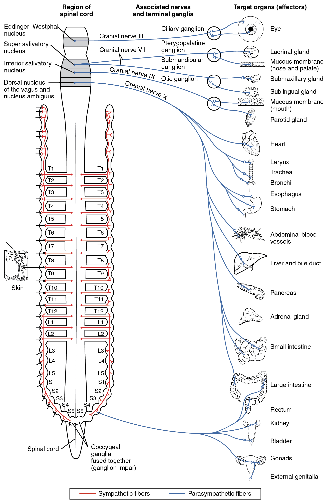
Where an autonomic neuron connects with a target, there is a synapse. The electrical signal of the action potential causes the release of a signaling molecule, which will bind to receptor proteins on the target cell. Synapses of the autonomic system are classified as eithercholinergic, meaning thatacetylcholine (ACh)is released, oradrenergic, meaning thatnorepinephrineis released. The terms cholinergic and adrenergic refer not only to the signaling molecule that is released but also to the class of receptors that each binds.
The cholinergic system includes two classes of receptor: thenicotinic receptorand themuscarinic receptor. Both receptor types bind to ACh and cause changes in the target cell. The nicotinic receptor is aligand-gated cation channeland the muscarinic receptor is aG protein–coupled receptor. The receptors are named for, and differentiated by, other molecules that bind to them. Whereas nicotine will bind to the nicotinic receptor, and muscarine will bind to the muscarinic receptor, there is no cross-reactivity between the receptors. The situation is similar to locks and keys. Imagine two locks—one for a classroom and the other for an office—that are opened by two separate keys. The classroom key will not open the office door and the office key will not open the classroom door. This is similar to the specificity of nicotine and muscarine for their receptors. However, a master key can open multiple locks, such as a master key for the Biology Department that opens both the classroom and the office doors. This is similar to ACh that binds to both types of receptors. The molecules that define these receptors are not crucial—they are simply tools for researchers to use in the laboratory. These molecules areexogenous, meaning that they are made outside of the human body, so a researcher can use them without any confoundingendogenousresults (results caused by the molecules produced in the body).
The adrenergic system also has two types of receptors, named thealpha (α)-adrenergic receptorandbeta (β)-adrenergic receptor. Unlike cholinergic receptors, these receptor types are not classified by which drugs can bind to them. All of them are G protein–coupled receptors. There are two types of α-adrenergic receptors, termed α1, and α2, and there are three types of β-adrenergic receptors, termed β1, β2and β3. An additional aspect of the adrenergic system is that there is a second signaling molecule calledepinephrine. The chemical difference between norepinephrine and epinephrine is the addition of a methyl group (CH3) in epinephrine. The prefix “nor-” actually refers to this chemical difference, in which a methyl group is missing.
The term adrenergic should remind you of the word adrenaline, which is associated with the fight-or-flight response described at the beginning of the chapter. Adrenaline and epinephrine are two names for the same molecule. The adrenal gland (in Latin, ad- = “on top of”; renal = “kidney”) secretes adrenaline. The ending “-ine” refers to the chemical being derived, or extracted, from the adrenal gland. A similar construction from Greek instead of Latin results in the word epinephrine (epi- = “above”; nephr- = “kidney”). In scientific usage, epinephrine is preferred in the United States, whereas adrenaline is preferred in Great Britain, because “adrenalin” was once a registered, proprietary drug name in the United States. Though the drug is no longer sold, the convention of referring to this molecule by the two different names persists. Similarly, norepinephrine and noradrenaline are two names for the same molecule.
Having understood the cholinergic and adrenergic systems, their role in the autonomic system is relatively simple to understand. All preganglionic fibers, both sympathetic and parasympathetic, release ACh. All ganglionic neurons—the targets of these preganglionic fibers—have nicotinic receptors in their cell membranes. The nicotinic receptor is a ligand-gated cation channel that results in depolarization of the postsynaptic membrane. The postganglionic parasympathetic fibers also release ACh, but the receptors on their targets are muscarinic receptors, which are G protein–coupled receptors and do not exclusively cause depolarization of the postsynaptic membrane. Postganglionic sympathetic fibers release norepinephrine, except for fibers that project to sweat glands and to blood vessels associated with skeletal muscles, which release ACh (Table \(\PageIndex{1}\)).
| Sympathetic | Parasympathetic | |
|---|---|---|
| Preganglionic | Acetylcholine → nicotinic receptor | Acetylcholine → nicotinic receptor |
| Postganglionic | Norepinephrine → α- or β-adrenergic receptorsAcetylcholine → muscarinic receptor (associated with sweat glands and the blood vessels associated with skeletal muscles only | Acetylcholine → muscarinic receptor |
Signaling molecules can belong to two broad groups. Neurotransmitters are released at synapses, whereas hormones are released into the bloodstream. These are simplistic definitions, but they can help to clarify this point. Acetylcholine can be considered a neurotransmitter because it is released by axons at synapses. The adrenergic system, however, presents a challenge. Postganglionic sympathetic fibers release norepinephrine, which can be considered a neurotransmitter. But the adrenal medulla releases epinephrine and norepinephrine into circulation, so they should be considered hormones.
What are referred to here as synapses may not fit the strictest definition of synapse. Some sources will refer to the connection between a postganglionic fiber and a target effector as neuroeffector junctions; neurotransmitters, as defined above, would be called neuromodulators. The structure of postganglionic connections are not the typical synaptic end bulb that is found at the neuromuscular junction, but rather are chains of swellings along the length of a postganglionic fiber called avaricosity(Figure \(\PageIndex{4}\)).
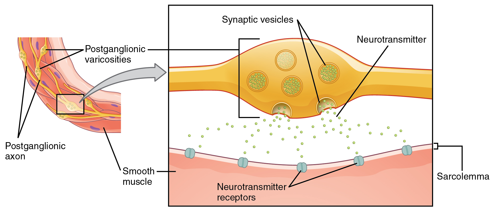
#### Fight or Flight? What About Fright and Freeze?
The original usage of the epithet “fight or flight” comes from a scientist named Walter Cannon who worked at Harvard in 1915. The concept of homeostasis and the functioning of the sympathetic system had been introduced in France in the previous century. Cannon expanded the idea, and introduced the idea that an animal responds to a threat by preparing to stand and fight or run away. The nature of this response was thoroughly explained in a book on the physiology of pain, hunger, fear, and rage.
When students learn about the sympathetic system and the fight-or-flight response, they often stop and wonder about other responses. If you were faced with a lioness running toward you as pictured at the beginning of this chapter, would you run or would you stand your ground? Some people would say that they would freeze and not know what to do. So isn’t there really more to what the autonomic system does than fight, flight, rest, or digest. What about fear and paralysis in the face of a threat?
The common epithet of “fight or flight” is being enlarged to be “fight, flight, or fright” or even “fight, flight, fright, or freeze.” Cannon’s original contribution was a catchy phrase to express some of what the nervous system does in response to a threat, but it is incomplete. The sympathetic system is responsible for the physiological responses to emotional states. The name “sympathetic” can be said to mean that (sym- = “together”; -pathos = “pain,” “suffering,” or “emotion”).
Watch this videoto learn more about the nervous system. As described in this video, the nervous system has a way to deal with threats and stress that is separate from the conscious control of the somatic nervous system. The system comes from a time when threats were about survival, but in the modern age, these responses become part of stress and anxiety. This video describes how the autonomic system is only part of the response to threats, or stressors. What other organ system gets involved, and what part of the brain coordinates the two systems for the entire response, including epinephrine (adrenaline) and cortisol?
📖 OpenStax Anatomy & Physiology 2e, Section 15.2. openstax.org · CC BY 4.0
- Compare the structure of somatic and autonomic reflex arcs
- Explain the differences in sympathetic and parasympathetic reflexes
- Differentiate between short and long reflexes
- Determine the effect of the autonomic nervous system on the regulation of the various organ systems on the basis of the signaling molecules involved
- Describe the effects of drugs that affect autonomic function
The autonomic nervous system regulates organ systems through circuits that resemble the reflexes described in the somatic nervous system. The main difference between the somatic and autonomic systems is in what target tissues are effectors. Somatic responses are solely based on skeletal muscle contraction. The autonomic system, however, targets cardiac and smooth muscle, as well as glandular tissue. Whereas the basic circuit is areflex arc, there are differences in the structure of those reflexes for the somatic and autonomic systems.
One difference between asomatic reflex, such as the withdrawal reflex, and avisceral reflex, which is an autonomic reflex, is in theefferent branch. The output of a somatic reflex is the lower motor neuron in the ventral horn of the spinal cord that projects directly to a skeletal muscle to cause its contraction. The output of a visceral reflex is a two-step pathway starting with the preganglionic fiber emerging from a lateral horn neuron in the spinal cord, or a cranial nucleus neuron in the brain stem, to a ganglion—followed by the postganglionic fiber projecting to a target effector. The other part of a reflex, theafferent branch, is often the same between the two systems. Sensory neurons receiving input from the periphery—with cell bodies in the sensory ganglia, either of a cranial nerve or a dorsal root ganglion adjacent to the spinal cord—project into the CNS to initiate the reflex (Figure \(\PageIndex{1}\) ). The Latin root “effere” means “to carry.” Adding the prefix “ef-” suggests the meaning “to carry away,” whereas adding the prefix “af-” suggests “to carry toward or inward.”
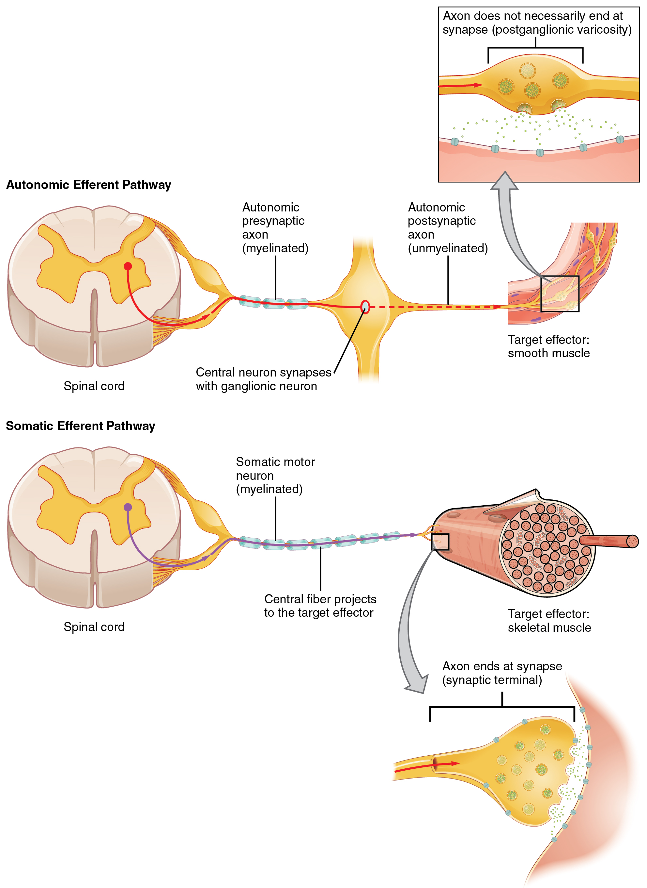
The afferent branch of a reflex arc does differ between somatic and visceral reflexes in some instances. Many of the inputs to visceral reflexes are from special or somatic senses, but particular senses are associated with the viscera that are not part of the conscious perception of the environment through the somatic nervous system. For example, there is a specific type of mechanoreceptor, called abaroreceptor, in the walls of the aorta and carotid sinuses that senses the stretch of those organs when blood volume or pressure increases. You do not have a conscious perception of having high blood pressure, but that is an important afferent branch of the cardiovascular and, particularly, vasomotor reflexes. The sensory neuron is essentially the same as any other general sensory neuron. The baroreceptor apparatus is part of the ending of a unipolar neuron that has a cell body in a sensory ganglion. The baroreceptors from the carotid arteries have axons in the glossopharyngeal nerve, and those from the aorta have axons in the vagus nerve.
Though visceral senses are not primarily a part of conscious perception, those sensations sometimes make it to conscious awareness. If a visceral sense is strong enough, it will be perceived. The sensory homunculus—the representation of the body in the primary somatosensory cortex—only has a small region allotted for the perception of internal stimuli. If you swallow a large bolus of food, for instance, you will probably feel the lump of that food as it pushes through your esophagus, or even if your stomach is distended after a large meal. If you inhale especially cold air, you can feel it as it enters your larynx and trachea. These sensations are not the same as feeling high blood pressure or blood sugar levels.
When particularly strong visceral sensations rise to the level of conscious perception, the sensations are often felt in unexpected places. For example, strong visceral sensations of the heart will be felt as pain in the left shoulder and left arm. This irregular pattern of projection of conscious perception of visceral sensations is calledreferred pain. Depending on the organ system affected, the referred pain will project to different areas of the body (Figure \(\PageIndex{2}\)). The location of referred pain is not random, but a definitive explanation of the mechanism has not been established. The most broadly accepted theory for this phenomenon is that the visceral sensory fibers enter into the same level of the spinal cord as the somatosensory fibers of the referred pain location. By this explanation, the visceral sensory fibers from the mediastinal region, where the heart is located, would enter the spinal cord at the same level as the spinal nerves from the shoulder and arm, so the brain misinterprets the sensations from the mediastinal region as being from the axillary and brachial regions. Projections from the medial and inferior divisions of the cervical ganglia do enter the spinal cord at the middle to lower cervical levels, which is where the somatosensory fibers enter.
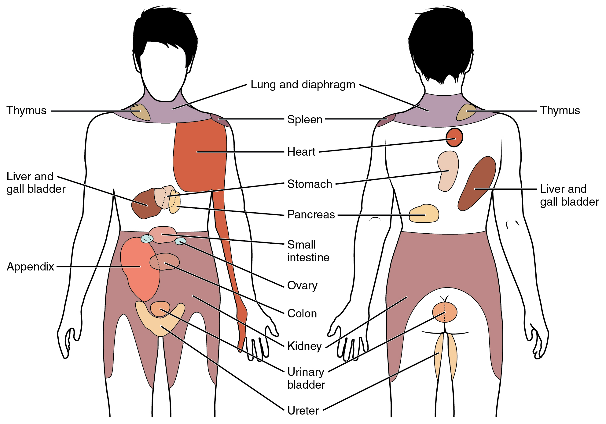
#### Nervous System: Kehr’s Sign
Kehr’s sign is the presentation of pain in the left shoulder, chest, and neck regions following rupture of the spleen. The spleen is in the upper-left abdominopelvic quadrant, but the pain is more in the shoulder and neck. How can this be? The sympathetic fibers connected to the spleen are from the celiac ganglion, which would be from the mid-thoracic to lower thoracic region whereas parasympathetic fibers are found in the vagus nerve, which connects in the medulla of the brain stem. However, the neck and shoulder would connect to the spinal cord at the mid-cervical level of the spinal cord. These connections do not fit with the expected correspondence of visceral and somatosensory fibers entering at the same level of the spinal cord.
The incorrect assumption would be that the visceral sensations are coming from the spleen directly. In fact, the visceral fibers are coming from the diaphragm. The nerve connecting to the diaphragm takes a special route. The phrenic nerve is connected to the spinal cord at cervical levels 3 to 5. The motor fibers that make up this nerve are responsible for the muscle contractions that drive ventilation. These fibers have left the spinal cord to enter the phrenic nerve, meaning that spinal cord damage below the mid-cervical level is not fatal by making ventilation impossible. Therefore, the visceral fibers from the diaphragm enter the spinal cord at the same level as the somatosensory fibers from the neck and shoulder.
The diaphragm plays a role in Kehr’s sign because the spleen is just inferior to the diaphragm in the upper-left quadrant of the abdominopelvic cavity. When the spleen ruptures, blood spills into this region. The accumulating hemorrhage then puts pressure on the diaphragm. The visceral sensation is actually in the diaphragm, so the referred pain is in a region of the body that corresponds to the diaphragm, not the spleen.
The efferent branch of the visceral reflex arc begins with the projection from the central neuron along the preganglionic fiber. This fiber then makes a synapse on the ganglionic neuron that projects to the target effector.
The effector organs that are the targets of the autonomic system range from the iris and ciliary body of the eye to the urinary bladder and reproductive organs. The thoracolumbar output, through the various sympathetic ganglia, reaches all of these organs. The cranial component of the parasympathetic system projects from the eye to part of the intestines. The sacral component picks up with the majority of the large intestine and the pelvic organs of the urinary and reproductive systems.
#### Short and Long Reflexes
Somatic reflexes involve sensory neurons that connect sensory receptors to the CNS and motor neurons that project back out to the skeletal muscles. Visceral reflexes that involve the thoracolumbar or craniosacral systems share similar connections. However, there are reflexes that do not need to involve any CNS components. Along reflexhas afferent branches that enter the spinal cord or brain and involve the efferent branches, as previously explained. Ashort reflexis completely peripheral and only involves the local integration of sensory input with motor output (Figure \(\PageIndex{3}\)).
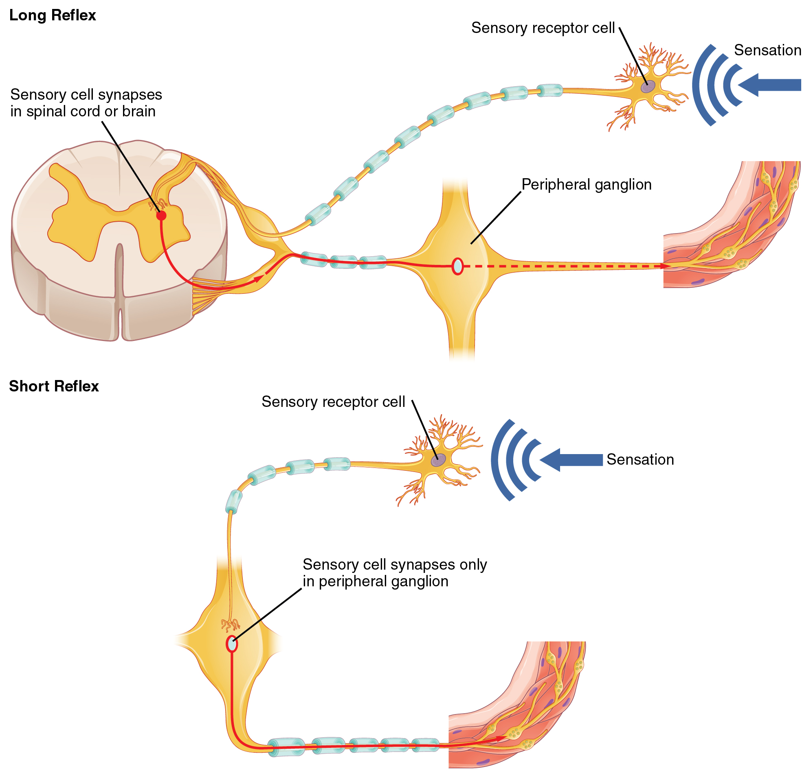
The difference between short and long reflexes is in the involvement of the CNS. Somatic reflexes always involve the CNS, even in a monosynaptic reflex in which the sensory neuron directly activates the motor neuron. That synapse is in the spinal cord or brain stem, so it has to involve the CNS. However, in the autonomic system there is the possibility that the CNS is not involved. Because the efferent branch of a visceral reflex involves two neurons—the central neuron and the ganglionic neuron—a “short circuit” can be possible. If a sensory neuron projects directly to the ganglionic neuron and causes it to activate the effector target, then the CNS is not involved.
A division of the nervous system that is related to the autonomic nervous system is the enteric nervous system. The word enteric refers to the digestive organs, so this represents the nervous tissue that is part of the digestive system. There are a few myenteric plexuses in which the nervous tissue in the wall of the digestive tract organs can directly influence digestive function. If stretch receptors in the stomach are activated by the filling and distension of the stomach, a short reflex will directly activate the smooth muscle fibers of the stomach wall to increase motility to digest the excessive food in the stomach. No CNS involvement is needed because the stretch receptor is directly activating a neuron in the wall of the stomach that causes the smooth muscle to contract. That neuron, connected to the smooth muscle, is a postganglionic parasympathetic neuron that can be controlled by a fiber found in the vagus nerve.
Read this articleto learn about a teenager who experiences a series of spells that suggest a stroke. He undergoes endless tests and seeks input from multiple doctors. In the end, one expert, one question, and a simple blood pressure cuff answers the question. Why would the heart have to beat faster when the teenager changes his body position from lying down to sitting, and then to standing?
The autonomic nervous system is important for homeostasis because its two divisions compete at the target effector. The balance of homeostasis is attributable to the competing inputs from the sympathetic and parasympathetic divisions (dual innervation). At the level of the target effector, the signal of which system is sending the message is strictly chemical. A signaling molecule binds to a receptor that causes changes in the target cell, which in turn causes the tissue or organ to respond to the changing conditions of the body.
#### Competing Neurotransmitters
The postganglionic fibers of the sympathetic and parasympathetic divisions both release neurotransmitters that bind to receptors on their targets. Postganglionic sympathetic fibers release norepinephrine, with a minor exception, whereas postganglionic parasympathetic fibers release ACh. For any given target, the difference in which division of the autonomic nervous system is exerting control is just in what chemical binds to its receptors. The target cells will have adrenergic and muscarinic receptors. If norepinephrine is released, it will bind to the adrenergic receptors present on the target cell, and if ACh is released, it will bind to the muscarinic receptors on the target cell.
In the sympathetic system, there are exceptions to this pattern of dual innervation. The postganglionic sympathetic fibers that contact the blood vessels within skeletal muscle and that contact sweat glands do not release norepinephrine, they release ACh. This does not create any problem because there is no parasympathetic input to the sweat glands. Sweat glands have muscarinic receptors and produce and secrete sweat in response to the presence of ACh.
At most of the other targets of the autonomic system, the effector response is based on which neurotransmitter is released and what receptor is present. For example, regions of the heart that establish heart rate are contacted by postganglionic fibers from both systems. If norepinephrine is released onto those cells, it binds to an adrenergic receptor that causes the cells to depolarize faster, and the heart rate increases. If ACh is released onto those cells, it binds to a muscarinic receptor that causes the cells to hyperpolarize so that they cannot reach threshold as easily, and the heart rate slows. Without this parasympathetic input, the heart would work at a rate of approximately 100 beats per minute (bpm). The sympathetic system speeds that up, as it would during exercise, to 120–140 bpm, for example. The parasympathetic system slows it down to the resting heart rate of 60–80 bpm.
Another example is in the control of pupillary size (Figure \(\PageIndex{4}\)). The afferent branch responds to light hitting the retina. Photoreceptors are activated, and the signal is transferred to the retinal ganglion cells that send an action potential along the optic nerve into the diencephalon. If light levels are low, the sympathetic system sends a signal out through the upper thoracic spinal cord to the superior cervical ganglion of the sympathetic chain. The postganglionic fiber then projects to the iris, where it releases norepinephrine onto the radial fibers of the iris (a smooth muscle). When those fibers contract, the pupil dilates—increasing the amount of light hitting the retina. If light levels are too high, the parasympathetic system sends a signal out from the Edinger–Westphal nucleus through the oculomotor nerve. This fiber synapses in the ciliary ganglion in the posterior orbit. The postganglionic fiber then projects to the iris, where it releases ACh onto the circular fibers of the iris—another smooth muscle. When those fibers contract, the pupil constricts to limit the amount of light hitting the retina.
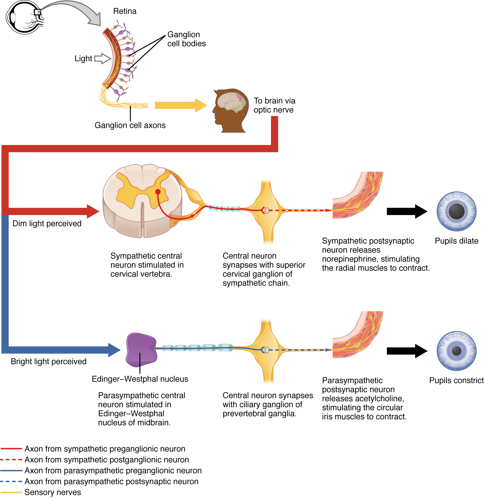
In this example, the autonomic system is controlling how much light hits the retina. It is a homeostatic reflex mechanism that keeps the activation of photoreceptors within certain limits. In the context of avoiding a threat like the lioness on the savannah, the sympathetic response for fight or flight will increase pupillary diameter so that more light hits the retina and more visual information is available for running away. Likewise, the parasympathetic response of rest reduces the amount of light reaching the retina, allowing the photoreceptors to cycle through bleaching and be regenerated for further visual perception; this is what the homeostatic process is attempting to maintain.
Watch this video to learn about the pupillary reflexes. The pupillary light reflex involves sensory input through the optic nerve and motor response through the oculomotor nerve to the ciliary ganglion, which projects to the circular fibers of the iris. As shown in this short animation, pupils will constrict to limit the amount of light falling on the retina under bright lighting conditions. What constitutes the afferent and efferent branches of the competing reflex (dilation)?
Organ systems are balanced between the input from the sympathetic and parasympathetic divisions. When something upsets that balance, the homeostatic mechanisms strive to return it to its regular state. For each organ system, there may be more of a sympathetic or parasympathetic tendency to the resting state, which is known as theautonomic toneof the system. For example, the heart rate was described above. Because the resting heart rate is the result of the parasympathetic system slowing the heart down from its intrinsic rate of 100 bpm, the heart can be said to be in parasympathetic tone.
In a similar fashion, another aspect of the cardiovascular system is primarily under sympathetic control. Blood pressure is partially determined by the contraction of smooth muscle in the walls of blood vessels. These tissues have adrenergic receptors that respond to the release of norepinephrine from postganglionic sympathetic fibers by constricting and increasing blood pressure. The hormones released from the adrenal medulla—epinephrine and norepinephrine—will also bind to these receptors. Those hormones travel through the bloodstream where they can easily interact with the receptors in the vessel walls. The parasympathetic system has no significant input to the systemic blood vessels, so the sympathetic system determines their tone.
There are a limited number of blood vessels that respond to sympathetic input in a different fashion. Blood vessels in skeletal muscle, particularly those in the lower limbs, are more likely to dilate. It does not have an overall effect on blood pressure to alter the tone of the vessels, but rather allows for blood flow to increase for those skeletal muscles that will be active in the fight-or-flight response. The blood vessels that have a parasympathetic projection are limited to those in the erectile tissue of the reproductive organs. Acetylcholine released by these postganglionic parasympathetic fibers cause the vessels to dilate, leading to the engorgement of the erectile tissue.
#### Orthostatic Hypotension
Have you ever stood up quickly and felt dizzy for a moment? This is because, for one reason or another, blood is not getting to your brain so it is briefly deprived of oxygen. When you change position from sitting or lying down to standing, your cardiovascular system has to adjust for a new challenge, keeping blood pumping up into the head while gravity is pulling more and more blood down into the legs.
The reason for this is a sympathetic reflex that maintains the output of the heart in response to postural change. When a person stands up, proprioceptors indicate that the body is changing position. A signal goes to the CNS, which then sends a signal to the upper thoracic spinal cord neurons of the sympathetic division. The sympathetic system then causes the heart to beat faster and the blood vessels to constrict. Both changes will make it possible for the cardiovascular system to maintain the rate of blood delivery to the brain. Blood is being pumped superiorly through the internal branch of the carotid arteries into the brain, against the force of gravity. Gravity is not increasing while standing, but blood is more likely to flow down into the legs as they are extended for standing. This sympathetic reflex keeps the brain well oxygenated so that cognitive and other neural processes are not interrupted.
Sometimes this does not work properly. If the sympathetic system cannot increase cardiac output, then blood pressure into the brain will decrease, and a brief neurological loss can be felt. This can be brief, as a slight “wooziness” when standing up too quickly, or a loss of balance and neurological impairment for a period of time. The name for this is orthostatic hypotension, which means that blood pressure goes below the homeostatic set point when standing. It can be the result of standing up faster than the reflex can occur, which may be referred to as a benign “head rush,” or it may be the result of an underlying cause.
There are two basic reasons that orthostatic hypotension can occur. First, blood volume is too low and the sympathetic reflex is not effective. This hypovolemia may be the result of dehydration or medications that affect fluid balance, such as diuretics or vasodilators. Both of these medications are meant to lower blood pressure, which may be necessary in the case of systemic hypertension, and regulation of the medications may alleviate the problem. Sometimes increasing fluid intake or water retention through salt intake can improve the situation.
The second underlying cause of orthostatic hypotension is autonomic failure. There are several disorders that result in compromised sympathetic functions. The disorders range from diabetes to multiple system atrophy (a loss of control over many systems in the body), and addressing the underlying condition can improve the hypotension. For example, with diabetes, peripheral nerve damage can occur, which would affect the postganglionic sympathetic fibers. Getting blood glucose levels under control can improve neurological deficits associated with diabetes.
📖 OpenStax Anatomy & Physiology 2e, Section 15.3. openstax.org · CC BY 4.0
- Describe the role of higher centers of the brain in autonomic regulation
- Explain the connection of the hypothalamus to homeostasis
- Describe the regions of the CNS that link the autonomic system with emotion
- Describe the pathways important to descending control of the autonomic system
The pupillary light reflex (Figure \(\PageIndex{1}\)) begins when light hits the retina and causes a signal to travel along the optic nerve. This is visual sensation, because the afferent branch of this reflex is simply sharing the special sense pathway. Bright light hitting the retina leads to the parasympathetic response, through the oculomotor nerve, followed by the postganglionic fiber from the ciliary ganglion, which stimulates the circular fibers of the iris to contract and constrict the pupil. When light hits the retina in one eye, both pupils contract. When that light is removed, both pupils dilate again back to the resting position. When the stimulus is unilateral (presented to only one eye), the response is bilateral (both eyes). The same is not true for somatic reflexes. If you touch a hot radiator, you only pull that arm back, not both. Central control of autonomic reflexes is different than for somatic reflexes. The hypothalamus, along with other CNS locations, controls the autonomic system.
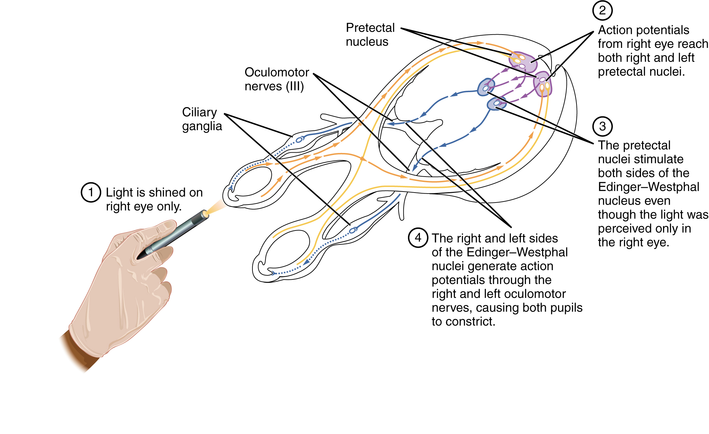
Autonomic control is based on the visceral reflexes, composed of the afferent and efferent branches. These homeostatic mechanisms are based on the balance between the two divisions of the autonomic system, which results in tone for various organs that is based on the predominant input from the sympathetic or parasympathetic systems. Coordinating that balance requires integration that begins with forebrain structures like the hypothalamus and continues into the brain stem and spinal cord.
#### The Hypothalamus
The hypothalamus is the control center for many homeostatic mechanisms. It regulates both autonomic function and endocrine function. The roles it plays in the pupillary reflexes demonstrates the importance of this control center. The optic nerve projects primarily to the thalamus, which is the necessary relay to the occipital cortex for conscious visual perception. Another projection of the optic nerve, however, goes to the hypothalamus.
The hypothalamus then uses this visual system input to drive the pupillary reflexes. If the retina is activated by high levels of light, the hypothalamus stimulates the parasympathetic response. If the optic nerve message shows that low levels of light are falling on the retina, the hypothalamus activates the sympathetic response. Output from the hypothalamus follows two main tracts, thedorsal longitudinal fasciculusand themedial forebrain bundle(Figure \(\PageIndex{2}\)). Along these two tracts, the hypothalamus can influence the Edinger–Westphal nucleus of the oculomotor complex or the lateral horns of the thoracic spinal cord.
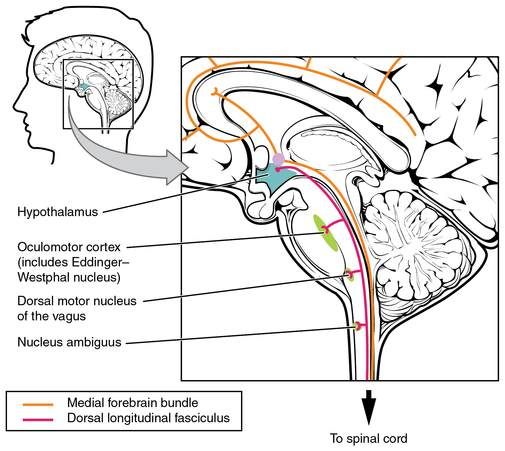
These two tracts connect the hypothalamus with the major parasympathetic nuclei in the brain stem and the preganglionic (central) neurons of the thoracolumbar spinal cord. The hypothalamus also receives input from other areas of the forebrain through the medial forebrain bundle. The olfactory cortex, the septal nuclei of the basal forebrain, and the amygdala project into the hypothalamus through the medial forebrain bundle. These forebrain structures inform the hypothalamus about the state of the nervous system and can influence the regulatory processes of homeostasis. A good example of this is found in the amygdala, which is found beneath the cerebral cortex of the temporal lobe and plays a role in our ability to remember and feel emotions.
The amygdala is a group of nuclei in the medial region of the temporal lobe that is part of thelimbic lobe(Figure \(\PageIndex{3}\)). The limbic lobe includes structures that are involved in emotional responses, as well as structures that contribute to memory function. The limbic lobe has strong connections with the hypothalamus and influences the state of its activity on the basis of emotional state. For example, when you are anxious or scared, the amygdala will send signals to the hypothalamus along the medial forebrain bundle that will stimulate the sympathetic fight-or-flight response. The hypothalamus will also stimulate the release of stress hormones through its control of the endocrine system in response to amygdala input.
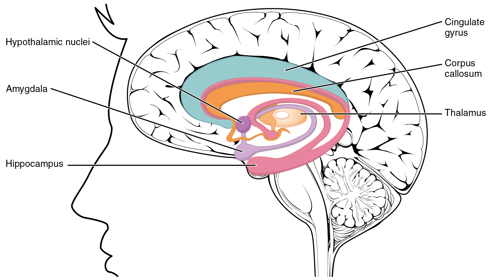
The medulla contains nuclei referred to as thecardiovascular center, which controls the smooth and cardiac muscle of the cardiovascular system through autonomic connections. When the homeostasis of the cardiovascular system shifts, such as when blood pressure changes, the coordination of the autonomic system can be accomplished within this region. Furthermore, when descending inputs from the hypothalamus stimulate this area, the sympathetic system can increase activity in the cardiovascular system, such as in response to anxiety or stress. The preganglionic sympathetic fibers that are responsible for increasing heart rate are referred to as thecardiac accelerator nerves, whereas the preganglionic sympathetic fibers responsible for constricting blood vessels compose thevasomotor nerves.
Several brain stem nuclei are important for the visceral control of major organ systems. One brain stem nucleus involved in cardiovascular function is the solitary nucleus. It receives sensory input about blood pressure and cardiac function from the glossopharyngeal and vagus nerves, and its output will activate sympathetic stimulation of the heart or blood vessels through the upper thoracic lateral horn. Another brain stem nucleus important for visceral control is the dorsal motor nucleus of the vagus nerve, which is the motor nucleus for the parasympathetic functions ascribed to the vagus nerve, including decreasing the heart rate, constricting bronchial tubes in the lungs, and activating digestive function through the enteric nervous system. The nucleus ambiguus, which is named for its ambiguous histology, also contributes to the parasympathetic output of the vagus nerve and targets muscles in the pharynx and larynx for swallowing and speech, as well as contributing to the parasympathetic tone of the heart along with the dorsal motor nucleus of the vagus.
#### Exercise and the Autonomic System
In addition to its association with the fight-or-flight response and rest-and-digest functions, the autonomic system is responsible for certain everyday functions. For example, it comes into play when homeostatic mechanisms dynamically change, such as the physiological changes that accompany exercise. Getting on the treadmill and putting in a good workout will cause the heart rate to increase, breathing to be stronger and deeper, sweat glands to activate, and the digestive system to suspend activity. These are the same physiological changes associated with the fight-or-flight response, but there is nothing chasing you on that treadmill.
This is not a simple homeostatic mechanism at work because “maintaining the internal environment” would mean getting all those changes back to their set points. Instead, the sympathetic system has become active during exercise so that your body can cope with what is happening. A homeostatic mechanism is dealing with the conscious decision to push the body away from a resting state. The heart, actually, is moving away from its homeostatic set point. Without any input from the autonomic system, the heart would beat at approximately 100 bpm, and the parasympathetic system slows that down to the resting rate of approximately 70 bpm. But in the middle of a good workout, you should see your heart rate at 120–140 bpm. You could say that the body is stressed because of what you are doing to it. Homeostatic mechanisms are trying to keep blood pH in the normal range, or to keep body temperature under control, but those are in response to the choice to exercise.
Watch this video to learn about physical responses to emotion. The autonomic system, which is important for regulating the homeostasis of the organ systems, is also responsible for our physiological responses to emotions such as fear. The video summarizes the extent of the body’s reactions and describes several effects of the autonomic system in response to fear. On the basis of what you have already studied about autonomic function, which effect would you expect to be associated with parasympathetic, rather than sympathetic, activity?
📖 OpenStax Anatomy & Physiology 2e, Section 15.4. openstax.org · CC BY 4.0
- List the classes of pharmaceuticals that interact with the autonomic nervous system
- Differentiate between cholinergic and adrenergic compounds
- Differentiate between sympathomimetic and sympatholytic drugs
- Relate the consequences of nicotine abuse with respect to autonomic control of the cardiovascular system
An important way to understand the effects of native neurochemicals in the autonomic system is in considering the effects of pharmaceutical drugs. This can be considered in terms of how drugs change autonomic function. These effects will primarily be based on how drugs act at the receptors of the autonomic system neurochemistry. The signaling molecules of the nervous system interact with proteins in the cell membranes of various target cells. In fact, no effect can be attributed to just the signaling molecules themselves without considering the receptors. A chemical that the body produces to interact with those receptors is called anendogenous chemical, whereas a chemical introduced to the system from outside is anexogenous chemical. Exogenous chemicals may be of a natural origin, such as a plant extract, or they may be synthetically produced in a pharmaceutical laboratory.
One important drug that affects the autonomic system broadly is not a pharmaceutical therapeutic agent associated with the system. This drug is nicotine. The effects of nicotine on the autonomic nervous system are important in considering the role smoking can play in health.
All ganglionic neurons of the autonomic system, in both sympathetic and parasympathetic ganglia, are activated by ACh released from preganglionic fibers. The ACh receptors on these neurons are of the nicotinic type, meaning that they are ligand-gated ion channels. When the neurotransmitter released from the preganglionic fiber binds to the receptor protein, a channel opens to allow positive ions to cross the cell membrane. The result is depolarization of the ganglia. Nicotine acts as an ACh analog at these synapses, so when someone takes in the drug, it binds to these ACh receptors and activates the ganglionic neurons, causing them to depolarize.
Ganglia of both divisions are activated equally by the drug. For many target organs in the body, this results in no net change. The competing inputs to the system cancel each other out and nothing significant happens. For example, the sympathetic system will cause sphincters in the digestive tract to contract, limiting digestive propulsion, but the parasympathetic system will cause the contraction of other muscles in the digestive tract, which will try to push the contents of the digestive system along. The end result is that the food does not really move along and the digestive system has not appreciably changed.
The system in which this can be problematic is in the cardiovascular system, which is why smoking is a risk factor for cardiovascular disease. First, there is no significant parasympathetic regulation of blood pressure. Only a limited number of blood vessels are affected by parasympathetic input, so nicotine will preferentially cause the vascular tone to become more sympathetic, which means blood pressure will be increased. Second, the autonomic control of the heart is special. Unlike skeletal or smooth muscles, cardiac muscle is intrinsically active, meaning that it generates its own action potentials. The autonomic system does not cause the heart to beat, it just speeds it up (sympathetic) or slows it down (parasympathetic). The mechanisms for this are not mutually exclusive, so the heart receives conflicting signals, and the rhythm of the heart can be affected (Figure \(\PageIndex{1}\)).
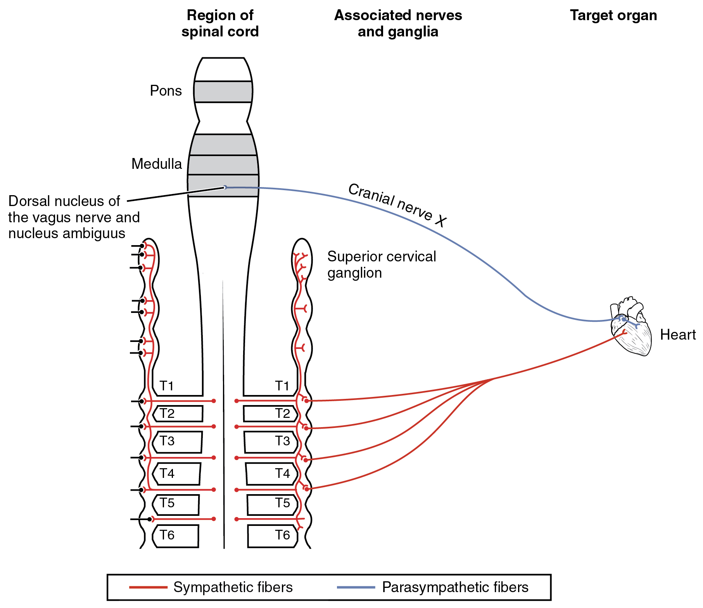
The neurochemistry of the sympathetic system is based on the adrenergic system. Norepinephrine and epinephrine influence target effectors by binding to the α-adrenergic or β-adrenergic receptors. Drugs that affect the sympathetic system affect these chemical systems. The drugs can be classified by whether they enhance the functions of the sympathetic system or interrupt those functions. A drug that enhances adrenergic function is known as asympathomimetic drug, whereas a drug that interrupts adrenergic function is asympatholytic drug.
#### Sympathomimetic Drugs
When the sympathetic system is not functioning correctly or the body is in a state of homeostatic imbalance, these drugs act at postganglionic terminals and synapses in the sympathetic efferent pathway. These drugs either bind to particular adrenergic receptors and mimic norepinephrine at the synapses between sympathetic postganglionic fibers and their targets, or they increase the production and release of norepinephrine from postganglionic fibers. Also, to increase the effectiveness of adrenergic chemicals released from the fibers, some of these drugs may block the removal or reuptake of the neurotransmitter from the synapse.
A common sympathomimetic drug is phenylephrine, which is a common component of decongestants. It can also be used to dilate the pupil and to raise blood pressure. Phenylephrine is known as an α1-adrenergicagonist, meaning that it binds to a specific adrenergic receptor, stimulating a response. In this role, phenylephrine will bind to the adrenergic receptors in bronchioles of the lungs and cause them to dilate. By opening these structures, accumulated mucus can be cleared out of the lower respiratory tract. Phenylephrine is often paired with other pharmaceuticals, such as analgesics, as in the “sinus” version of many over-the-counter drugs, such as Tylenol Sinus®or Excedrin Sinus®, or in expectorants for chest congestion such as in Robitussin CF®.
A related molecule, called pseudoephedrine, was much more commonly used in these applications than was phenylephrine, until the molecule became useful in the illicit production of amphetamines. Phenylephrine is not as effective as a drug because it can be partially broken down in the digestive tract before it is ever absorbed. Like the adrenergic agents, phenylephrine is effective in dilating the pupil, known asmydriasis(Figure \(\PageIndex{2}\)). Phenylephrine is used during an eye exam in an ophthalmologist’s or optometrist’s office for this purpose. It can also be used to increase blood pressure in situations in which cardiac function is compromised, such as under anesthesia or during septic shock.
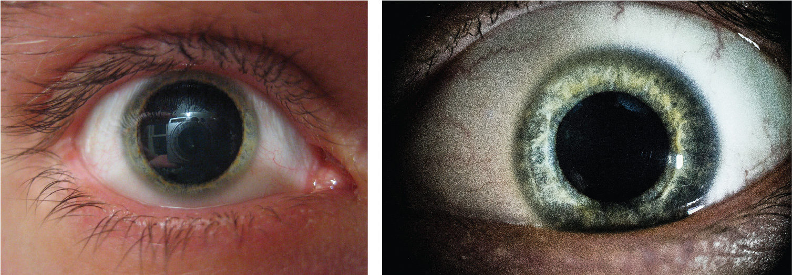
Other drugs that enhance adrenergic function are not associated with therapeutic uses, but affect the functions of the sympathetic system in a similar fashion. Cocaine primarily interferes with the uptake of dopamine at the synapse and can also increase adrenergic function. Caffeine is an antagonist to a different neurotransmitter receptor, called the adenosine receptor. Adenosine will suppress adrenergic activity, specifically the release of norepinephrine at synapses, so caffeine indirectly increases adrenergic activity. There is some evidence that caffeine can aid in the therapeutic use of drugs, perhaps by potentiating (increasing) sympathetic function, as is suggested by the inclusion of caffeine in over-the-counter analgesics such as Excedrin®.
#### Sympatholytic Drugs
Drugs that interfere with sympathetic function are referred to as sympatholytic, or sympathoplegic, drugs. They primarily work as anantagonistto the adrenergic receptors. They block the ability of norepinephrine or epinephrine to bind to the receptors so that the effect is “cut” or “takes a blow,” to refer to the endings “-lytic” and “-plegic,” respectively. The various drugs of this class will be specific to α-adrenergic or β-adrenergic receptors, or to their receptor subtypes.
Possibly the most familiar type of sympatholytic drug are the β-blockers. These drugs are often used to treat cardiovascular disease because they block the β-receptors associated with vasoconstriction and cardioacceleration. By allowing blood vessels to dilate, or keeping heart rate from increasing, these drugs can improve cardiac function in a compromised system, such as for a person with congestive heart failure or who has previously suffered a heart attack. A couple of common versions of β-blockers are metoprolol, which specifically blocks the β1-receptor, and propanolol, which nonspecifically blocks β-receptors. There are other drugs that are α-blockers and can affect the sympathetic system in a similar way.
Other uses for sympatholytic drugs are as antianxiety medications. A common example of this is clonidine, which is an α-agonist. The sympathetic system is tied to anxiety to the point that the sympathetic response can be referred to as “fight, flight, or fright.” Clonidine is used for other treatments aside from hypertension and anxiety, including pain conditions and attention deficit hyperactivity disorder.
Drugs affecting parasympathetic functions can be classified into those that increase or decrease activity at postganglionic terminals. Parasympathetic postganglionic fibers release ACh, and the receptors on the targets are muscarinic receptors. There are several types of muscarinic receptors, M1–M5, but the drugs are not usually specific to the specific types. Parasympathetic drugs can be either muscarinic agonists or antagonists, or have indirect effects on the cholinergic system. Drugs that enhance cholinergic effects are calledparasympathomimetic drugs, whereas those that inhibit cholinergic effects are referred to asanticholinergic drugs.
Pilocarpine is a nonspecific muscarinic agonist commonly used to treat disorders of the eye. It reverses mydriasis, such as is caused by phenylephrine, and can be administered after an eye exam. Along with constricting the pupil through the smooth muscle of the iris, pilocarpine will also cause the ciliary muscle to contract. This will open perforations at the base of the cornea, allowing for the drainage of aqueous humor from the anterior compartment of the eye and, therefore, reducing intraocular pressure related to glaucoma.
Atropine and scopolamine are part of a class of muscarinic antagonists that come from theAtropagenus of plants that include belladonna or deadly nightshade (Figure \(\PageIndex{3}\)). The name of one of these plants, belladonna, refers to the fact that extracts from this plant were used cosmetically for dilating the pupil. The active chemicals from this plant block the muscarinic receptors in the iris and allow the pupil to dilate, which is considered attractive because it makes the eyes appear larger. Humans are instinctively attracted to anything with larger eyes, which comes from the fact that the ratio of eye-to-head size is different in infants (or baby animals) and can elicit an emotional response. The cosmetic use of belladonna extract was essentially acting on this response. Atropine is no longer used in this cosmetic capacity for reasons related to the other name for the plant, which is deadly nightshade. Suppression of parasympathetic function, especially when it becomes systemic, can be fatal. Autonomic regulation is disrupted and anticholinergic symptoms develop. The berries of this plant are highly toxic, but can be mistaken for other berries. The antidote for atropine or scopolamine poisoning is pilocarpine.
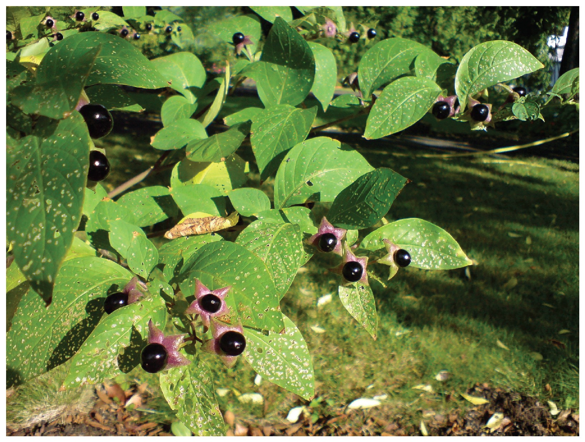
| Drug type | Example(s) | Sympathetic effect | Parasympathetic effect | Overall result |
|---|---|---|---|---|
| Nicotinic agonists | Nicotine | Mimic ACh at preganglionic synapses, causing activation of postganglionic fibers and the release of norepinephrine onto the target organ | Mimic ACh at preganglionic synapses, causing activation of postganglionic fibers and the release of ACh onto the target organ | Most conflicting signals cancel each other out, but cardiovascular system is susceptible to hypertension and arrhythmias |
| Sympathomimetic drugs | Phenylephrine | Bind to adrenergic receptors or mimics sympathetic action in some other way | No effect | Increase sympathetic tone |
| Sympatholytic drugs | β-blockers such as propanolol or metoprolol; α-agonists such as clonidine | Block binding to adrenergic drug or decrease adrenergic signals | No effect | Increase parasympathetic tone |
| Parasymphatho-mimetics/muscarinic agonists | Pilocarpine | No effect, except on sweat glands | Bind to muscarinic receptor, similar to ACh | Increase parasympathetic tone |
| Anticholinergics/muscarinic antagonists | Atropine, scopolamine, dimenhydrinate | No effect | Block muscarinic receptors and parasympathetic function | Increase sympathetic tone |
#### Autonomic Nervous System
Approximately 33 percent of people experience a mild problem with motion sickness, whereas up to 66 percent experience motion sickness under extreme conditions, such as being on a tossing boat with no view of the horizon. Connections between regions in the brain stem and the autonomic system result in the symptoms of nausea, cold sweats, and vomiting.
The part of the brain responsible for vomiting, or emesis, is known as the area postrema. It is located next to the fourth ventricle and is not restricted by the blood–brain barrier, which allows it to respond to chemicals in the bloodstream—namely, toxins that will stimulate emesis. There are significant connections between this area, the solitary nucleus, and the dorsal motor nucleus of the vagus nerve. These autonomic system and nuclei connections are associated with the symptoms of motion sickness.
Motion sickness is the result of conflicting information from the visual and vestibular systems. If motion is perceived by the visual system without the complementary vestibular stimuli, or through vestibular stimuli without visual confirmation, the brain stimulates emesis and the associated symptoms. The area postrema, by itself, appears to be able to stimulate emesis in response to toxins in the blood, but it is also connected to the autonomic system and can trigger a similar response to motion.
Autonomic drugs are used to combat motion sickness. Though it is often described as a dangerous and deadly drug, scopolamine is used to treat motion sickness. A popular treatment for motion sickness is the transdermal scopolamine patch. Scopolamine is one of the substances derived from theAtropagenus along with atropine. At higher doses, those substances are thought to be poisonous and can lead to an extreme sympathetic syndrome. However, the transdermal patch regulates the release of the drug, and the concentration is kept very low so that the dangers are avoided. For those who are concerned about using “The Most Dangerous Drug,” as some websites will call it, antihistamines such as dimenhydrinate (Dramamine®) can be used.
Watch this video to learn about the side effects of 3-D movies. As discussed in this video, movies that are shot in 3-D can cause motion sickness, which elicits the autonomic symptoms of nausea and sweating. The disconnection between the perceived motion on the screen and the lack of any change in equilibrium stimulates these symptoms. Why do you think sitting close to the screen or right in the middle of the theater makes motion sickness during a 3-D movie worse?
📖 OpenStax Anatomy & Physiology 2e, Section 15.5. openstax.org · CC BY 4.0
| Section | Title |
|---|---|
| 15.2 | 15.2: Divisions of the Autonomic Nervous System |
| 15.3 | 15.3: Autonomic Reflexes and Homeostasis |
| 15.4 | 15.4: Central Control |
| 15.5 | 15.5: Drugs that Affect the Autonomic System |